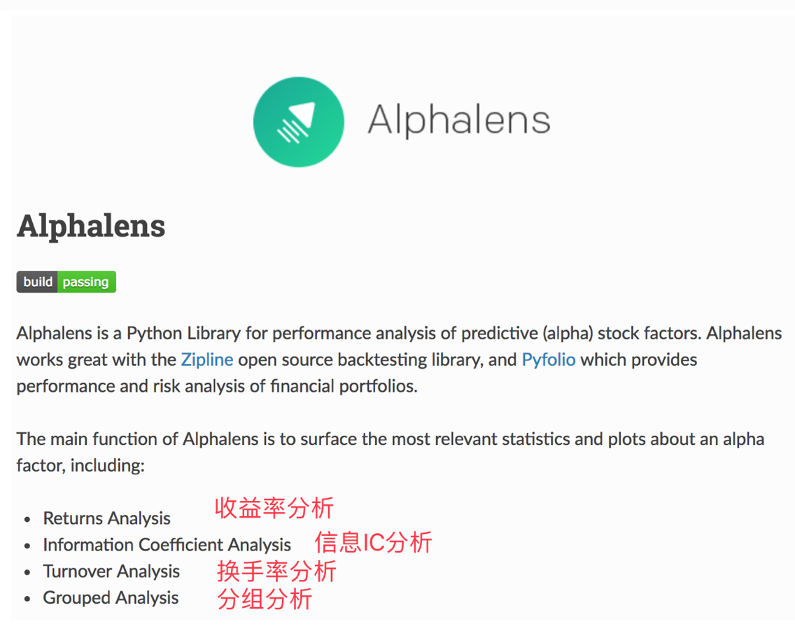
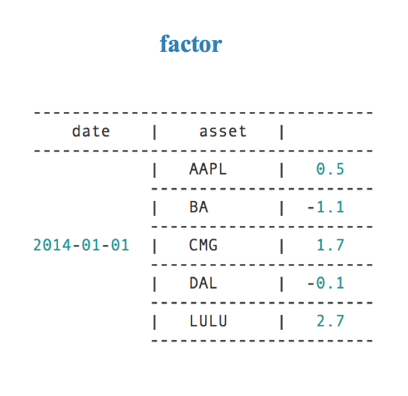
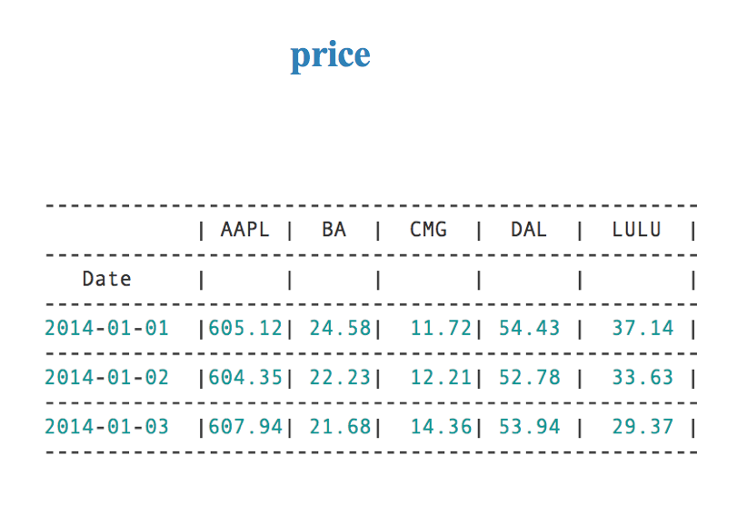
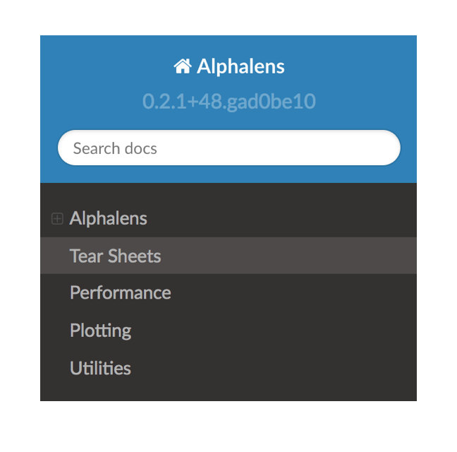

单因子有效性分析-因子IC分析
学习目标
- 目标
- 知道因子暴露度
- 说明因子的暴露值和下期收益率的相关性系数
- 说明因子IC的大小意义
- 知道股票收益率的计算规则
- 应用Alphalens实现因子IC计算
- 知道因子IC的效果图分析
- 应用
- 无
因子的IC分析需要确定的是因子与收益率之间的相关性，提供给筛选的依据。也就是这张表格中的IC相关值

- IC mean：因子IC的平均值
- IC std：因子IC的标准差
- IC > 0.02：因子IC大于0.02的比例
- 这里大于0.02可修改，如果更大，那么意味着筛选更加严格
- IR ： 信息比率
- 因子IR（信息比率）代表因子在历史上表现的稳定性。 IR = IC均值/IC的波动率。 因子在不同的历史时期的表现有可能差别很大， 有的时候表现很好， 有的时候表现很差，表现在IC上，就是IC的波动率很大。 假设IC均值一定， IC的波动率越小，因子表现越稳定，IR就越大 。
- IR > 0.3进行筛选，可以修改标准
在这里我们以分析估值类当中的部分因子。
1、 信息系数定义
某一期的IC指的是该期因子暴露值和股票下期的实际回报值在横截面上的相关系数

1.1 什么是因子暴露度
指的就是因子本身的值
1.2 计算方式
- 斯皮尔曼相关系数(Rank IC)
- 斯皮尔曼相关系数表明 X (独立变量) 和 Y (依赖变量)的相关方向。 如果当X增加时， Y 趋向于增加, 斯皮尔曼相关系数则为正
- 与之前的皮尔逊相关系数大小性质一样，取值 [-1, 1]之间
斯皮尔曼相关系数比皮尔逊相关系数应用更加广泛
1.3 信息系数API
- import scipy.stats as st
- st.spearmanr(fund['pe_ratio'], fund['return'])
但是现在我们知道因子值怎么获取，但是某段时间的收益怎么来？
2、 如何求收益率
2.1 收益率区间
- 按照区间大小或者研究的区间大小
- 日收益率
- 月收益率
- 年收益率
2.2 计算公式
- 计算公式，例如：当前区间D的收益率

公式解读：这期收盘价减上期收盘价/上期收盘价
计算收益率时，假如是月收益率，就认定每月最后一天价格作为当月的价格
3、 案例：单因子某天的IC分析
比如我们需要计算2017-01-03的因子IC值
3.1 分析
- 1、获取这一天因子数据
- 2、获取2017-01-03与2017-01-04的价格数据，计算2017-01-04的收益率（下期收益率）
- 3、计算相关系数
3.2 代码
# 1、获取因子数据
q = query(fundamentals.eod_derivative_indicator.pe_ratio)
fund = get_fundamentals(q, entry_date="2017-01-03")[:, 0, :]
# 2、获取当天和下一期的收盘价格
price_n = get_price(list(fund.index), start_date="2017-01-03", end_date="2017-01-03", fields="close").T
price_next = get_price(list(fund.index), start_date="2017-01-04", end_date="2017-01-04", fields="close").T
# 计算收益率, 填充缺失值
price_now.iloc[:, 0].fillna(price_now.iloc[:, 0].mean(), inplace=True)
price_next.iloc[:, 0].fillna(price_next.iloc[:, 0].mean(), inplace=True)
# 下期价格- 当前价格/ 当前价格, 这里计算的是下期的收益率 2017-01-04
return_price = price_next.iloc[:, 0]/price_now.iloc[:, 0] - 1
# 计算相关系数,是一个值，在[-1, 1] IC
st.spearmanr(fund.iloc[:, 0], return_price)
使用更加强大的工具去计算IC值
4、因子分析工具-Alphalens

4.1 alphalens的数据结构
在做分析之前，需要准备所有分析所需的数据格式，事前需 要准备好因子数据、 价格数据和行业分组数据。 行业数据可有可无，若有则可以设臵成 Dict 格式或者 Series 格式
- alphalens.utils.get_clean_factor_and_forward_returns(factor, prices, groupby=None, quantiles=5, bins=None, periods=(1, 5, 10), filter_zscore=20, groupby_labels=None, by_group=bool, max_loss=0.35)
| 参数 | 类型 | 说明 |
|---|---|---|
| factor | pd.Series – MultiIndex | 一次一个因子数据，MultiIndex系列由时间戳（级别0）和资产（级别1）索引，包含单个alpha因子的值 |
| price | pd.DataFrame | 所有股票的多天价格数据 |
| groupby | pd.Series - MultiIndex或dict | 行业分组信息， 保证每个股票都有行业分类 |
| periods=(1, 5, 10) | tuple | 默认计算了远期收益(预测能力) |
| groupby_labels | dict | 分组名称， 把所有的 行业贴上标签。比如说，(煤炭)中信对应数字 1，(钢铁)中信对应数字 2，以此类推。 |
| max_loss=0.35 | float | 计算允许因子数据丢弃的最大百分比（0.00到1.00）,（例如NaN），未提供足够的价格数据来计算所有因子值的远期收益率，设置max_loss = 0避免数据出现缺失 |
| by_group | bool | 分组计算可以理解成是传统的行业中性的做法 |
| return: merged_data： | pd.DataFrame - MultiIndex | 收益率、行业分组信息 |
factor格式如下图：

price格式如下图：

4.2 Alphalens API

from alphalens import performance
from alphalens import plotting
from alphalens import tears
from alphalens import utils
获取综合信息
- alphalens.tears.create_summary_tear_sheet(factor_data, long_short=True, group_neutral=False)
- 一个简易的summary包含几种综合分析
- alphalens.tears.create_summary_tear_sheet(factor_data, long_short=True, group_neutral=False)
因子IC 分析
- alphalens.performance.factor_information_coefficient(factor_data, group_adjust=False, by_group=False)
- 计算因子值和预期收益之间的基于Spearman等级相关的信息系数（IC）(默认每天)
- 返回IC dataframe
- factor_data:按日期（级别0）和资产（级别1）索引的MultiIndex DataFrame，包含单个alpha因子的值，每个期间的正向收益
- group_adjust: 是否行业分组
- by_group: 分组计算
- return: ic DataFrame
- alphalens.tearse.factor_alpha_beta(factor_data, returns=None, demeaned=True, group_adjust=False, equal_weight=False)
- 计算alpha和beta
- alphalens.tears.create_information_tear_sheet
- alphalens.performance.factor_information_coefficient(factor_data, group_adjust=False, by_group=False)
- 因子收益率系数分析
- alphalens.tears.create_returns_tear_sheet(factor_data, long_short=True,group_neutral=False, by_group=False)
5、 案例：使用alphalens进行单个因子的IC 分析
5.1 结果

我们确定要分析的区间，一般来讲分析因子以最近的2~3年时间，看效果较好的因子。这里我们分析质量因子当中的earnings_per_share因子
5.2 分析
- 准备因子series结构
- 去极值
- 标准化
- 准备价格数据
- 使用alphalens进行因子IC计算分析
5.3 代码
1、准备因子series结构
# 获取时间 pd.date_range获取是周一~周五， 没有除去假期
# 需要使用get_trading_dates
date = get_trading_dates(start_date="2017-01-01", end_date="2018-01-01")
# 定义一个装有所有天所有股票的因子数据
all_data = pd.DataFrame()
# 根据时间获取因子数据 每股收益earnings_per_share
for i in range(len(date)):
q = query(fundamentals.financial_indicator.earnings_per_share)
fund = get_fundamentals(q, entry_date=date[i])[:, 0, :]
# 构造date时间列
fund['date'] = date[i]
# 将所有每次循环的fund,都拼接到all_data当中
all_data = pd.concat([all_data, fund])
# 设置multiindex 的dataframe
all_data = all_data.set_index(['date', all_data.index])
# 因子的数据处理，去极值，标准化
all_data['earnings_per_share'] = mad(all_data['earnings_per_share'])
all_data['earnings_per_share'] = stand(all_data['earnings_per_share'])
# all_data multiIndex DataFrame --->multiIndex series
single_factor_series = all_data['earnings_per_share']
2、准备价格数据
# 获取所有股票代码列表
stocks = all_instruments('CS')
stocks_list = stocks['order_book_id']
# 获取指定时间的价格数据
price = get_price(list(stocks_list), start_date="2017-01-01", end_date="2018-01-01", fields='close')
3、因子IC计算
from alphalens import performance
from alphalens import plotting
from alphalens import tears
from alphalens import utils
# 准备一个使用所有alphalens的接口的通用数据
# 使用utils.get_clean_factor_and_forward_returns生成通用数据
factor_return = utils.get_clean_factor_and_forward_returns(single_factor_series, price)
IC = performance.factor_information_coefficient(factor_return)
6、 因子IC效果图分析
6.1 三种图形分析
- alphalens.plotting.plot_ic_ts(IC)
- 时间序列图和移动平均线图
- alphalens.plotting.plot_ic_hist(IC)
- 因子分布直方图
- alphalens.plotting.plot_ic_qq(IC)
- 因子Q-Q图
- plotting.plot_monthly_ic_heatmap(IC_month)
- 因子按月热力图
- 结合：计算月的因子IC， 这个月因子数据。和每月最后一个交易日计算出来的价格收益率
- IC_month = performance.mean_information_coefficient(factor_return, group_adjust=False, by_group=False, by_time='1m')
6.2 时间序列与移动平均线图
# 画出因子的时间序列图和移动平均线图
plotting.plot_ic_ts(IC)

从时间序列图当中我们可以看出一个因子在时间上的正负性，能清楚知道哪段区间内是正相关、负相关的结果
从中也能得出IC平均值，标准差的大小，就可以填入我们的表格当中
6.3 因子分布直方图

plotting.plot_ic_hist(IC)
6.4 因子IC的Q-Q图（分位数 - 分位数图）
横纵坐标为因子的分位数的值，如果画出来为一条直线，则符合正态分布。

plotting.plot_ic_qq(IC)
6.4 其它图形查看分析
月度热力图

7、因子有效性分析表格填充
在筛选因子的时候，会考虑某段时间的平均值大小。判断平均值大于某个数字，IC的值一般根据筛选严格程度取值，这个值可以自定义0.06意味筛选严格，> 0.02会放松筛选(可以用在对开始很多因子的海选中)
- IC > 0.02
# 得出IC > 0.02的比例
a = IC.iloc[:, 0]
len(a[a > 0.02])/len(a)
8、研报分析
代表：国海证券Rank-IC分析结果剖析